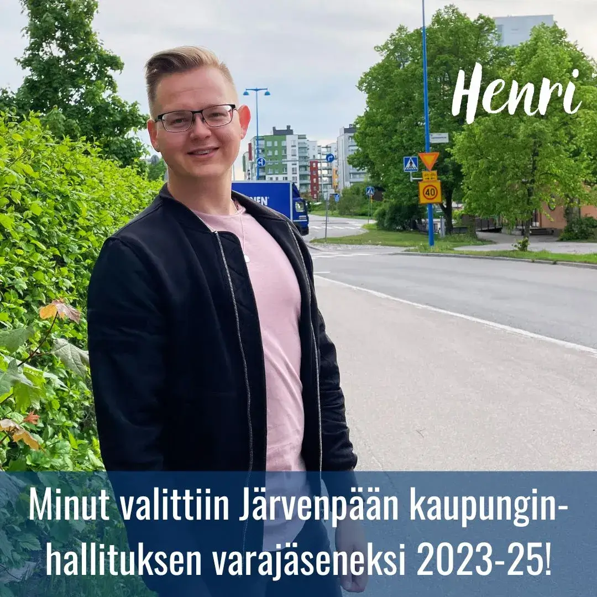

Kaupunginhallitus valittu - Kokoomus vahvistaa asemaansa päätöksenteossa

Kaupunginhallitus valittu - Kokoomus vahvistaa asemaansa päätöksenteossa
J√§rvenp√§√§n kaupunginvaltuusto valitsi eilisess√§ kokouksessaan kaupunginhallituksen kokoonpanon valtuustokauden j√§lkimm√§iselle puoliskolle (1.6.2023-31.5.2025). Minut valittiin t√§ss√§ yhteydess√§ kaupunginhallituksen varaj√§seneksi! üíô
Kokoomuksella on kaupunginhallituksessa seuraaviin kuntavaaleihin saakka kaksi jäsentä ja heille kaksi varajäsentä.
Pääsen kokoomuksen kaupunginhallitusryhmän jäsenenä entistäkin syvemmälle Järvenpään tulevaisuuden muovaamiseen ja sen vauhdittamiseen kohti uutta vuosikymmentä.
Odotan innolla hedelm√§llist√§ ja rakentavaa keskustelua niin omassa kh-ryhm√§ss√§mme kuin kaupunginhallitusp√∂yd√§ss√§kin! üôå
Lämmin kiitos saamastani luottamuksesta.

Järvenpään kaupunginvaltuutettu